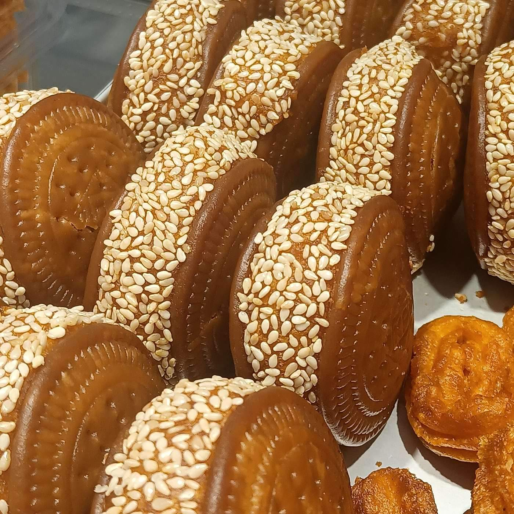
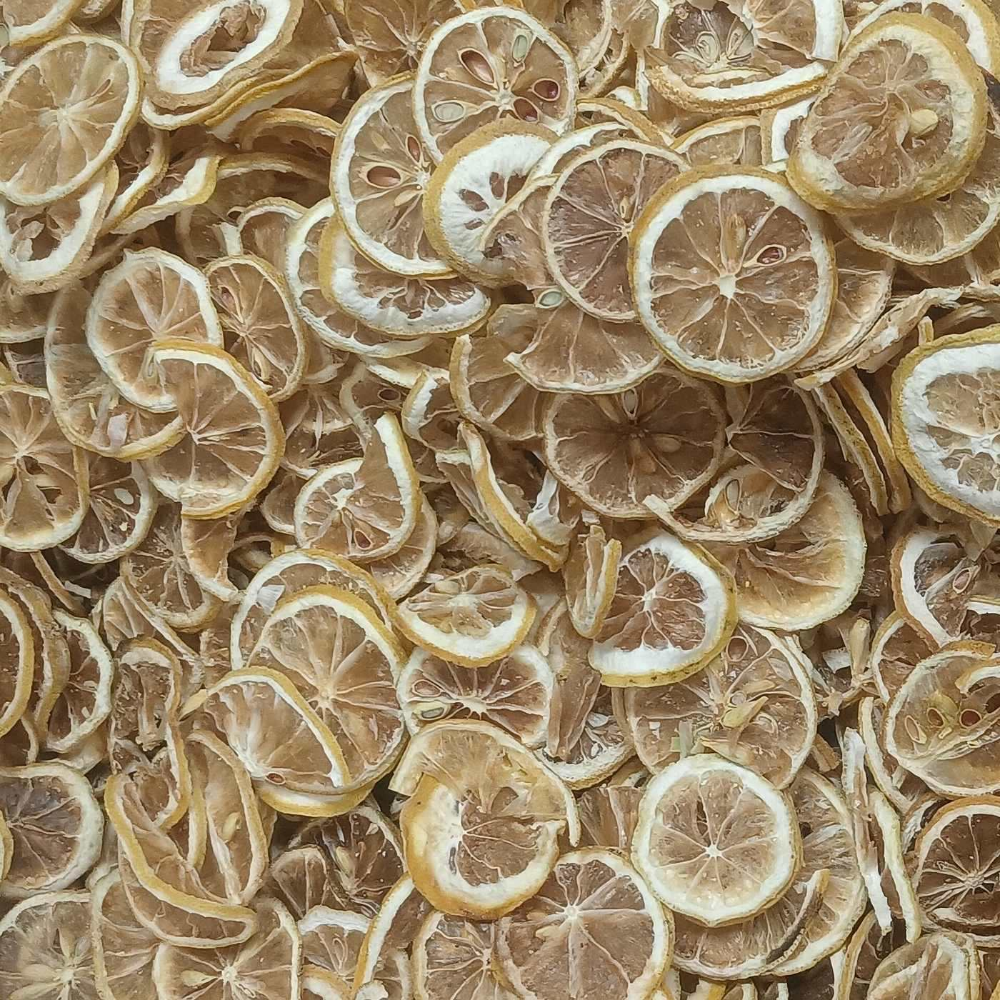

制作側の連想
ちりとりの部位を、配置図にしてみる
ちりとりの部位を図にしたもので、制作側の連想です。お店の理念・由来とは無関係で、実際の製品の仕様を示すものでもありません。 六つの部位に番号をふり、上の図と並べています。
凡例
六つの部位
- 1柄手で持つ細長い棒状の部分で、立ったまま扱えるように長く作られていることが多い。
- 2受け皿集めたごみを受ける、浅い皿のように広がった部分。
- 3前縁床に当ててごみをすくい込む側の、薄く平らなふち。
- 4ゴム縁前縁に沿って付く、やわらかい帯状の部分で、櫛の歯のような刻みがあるものもある。
- 5吊り下げ穴柄の端にあいた穴で、フックに掛けてしまっておくときに使う。
- 6背板受け皿の奥に立ち上がる壁の部分で、集めたごみがこぼれ出るのを防ぐ。
写真(イメージ)
写真(イメージ)




写真はイメージです。お店のものではありません。
ご案内
お店のこと(確認できたものだけ)
| 所在地 | 〒401-0305 山梨県南都留郡富士河口湖町大石２１８４−５ |
|---|---|
| 電話 | 準備中 |
| 営業時間 | 準備中 |
| 定休日 | 準備中 |
| ご予約 | 準備中 |
| 駐車場 | 準備中 |
| SNS | Instagram @bstone_bakers |